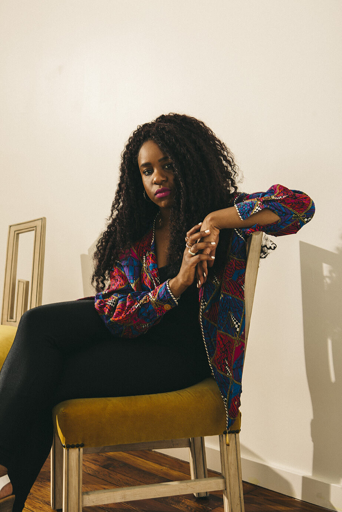
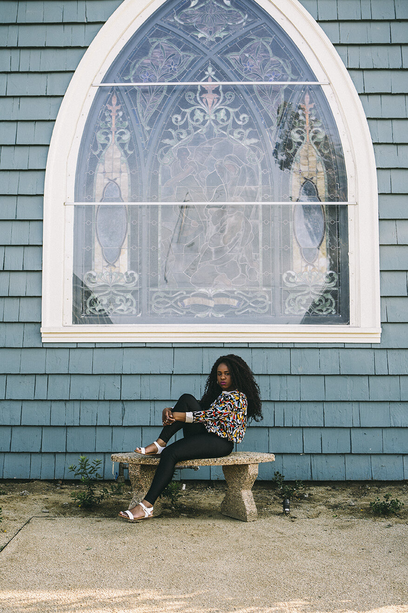

MUSIC - INTERVIEW
NAO
Nao is taking us to church. Outside, Ruby Street glows like a storybook cottage, its stained glass window scattering a thousand jewels onto the sidewalk. The scene inside the Highland Park church, which was built in 1895, is cozy, a swarm of tiny bulbs and light filtered through amber glass warming the hardwood floors.
“I never saw that many people like me doing the singing thing.”
Still, the voice is what really beckons. It’s not a choir, but it might be more powerful than that—Nao, alone save for her acoustic guitarist, stands in front of a crowd hanging onto her every note, a crowd scared to breathe lest they miss a single word.She commands attention. While she’s petite, her shock of inky curls adds a few inches. Painted cherry red, her lips repeatedly break into a wide smile. Tonight, she’s wearing a crop top, and she does have a come-hither quality, but her energy is less overtly sexual than earthy, like SZA. So it’s surprising what she says next. “This is a song about dealing with your own insecurities,” the 28-year-old singer says, introducing “Fool to Love” in her lilting East London accent. “That little devil on your shoulder telling you you can’t do something.” At least lately, Nao hasn’t been listening to him. After years of singing in groups, she ventured out on her own two years ago when she uploaded the song “So Good,” a sexily off-kilter collaboration with A.K. Paul (yep, the mysterious Jai Paul’s brother) onto her SoundCloud. Nervous about the reaction (or if there would even be one at all), she shut down her phone, but there was no reason to fret—it racked up 50,000 plays and was spun by Zane Lowe that very night. Since then, she’s released two EPs in the vein of her signature “wonky funk” genre, So Good and February 15; booked Glastonbury; toured with Little Dragon and featured on Disclosure’s sophomore album, Caracal. And then, as if to kick that devil of self-doubt while he was down, he launched her own label, Little Tokyo, on which she released her studio debut, For All We Know, in July.
“I was a singer for everyone else but my own music for ages. I was like, ‘I’ll do it tomorrow, I’ll do it tomorrow.' But the time is now,” she tells me earlier that day. “My album title is one of my favorite songs, and the version is by one of my favorite singers, Donny Hathaway. The sentiment—‘Love me, love me tonight, tomorrow is made for some, tomorrow may never come, for all we know’—all you have is today. You have to live now.” When she was little, Nao says, her family would travel three hours from London up to Birmingham to visit her grandmother. A deeply religious woman, her grandmother congregated at church every evening for choir practice, and carried Nao with her. The older Caribbean men and women’s voices would meld and rise to the sky in a rich cloud of sound, pregnant with praise and heartache and joy. But at seven years old, she was so bored at those choir practices, all she wanted to do was get out of there. Tonight, the message Nao preaches is sticky, and no one at Ruby Street wants to leave. Twenty years ago, all those eyes on her would’ve shot her into a panic. Growing up in Woodford, a small suburb of London, she says she was “painfully shy.” “I’d hide behind my dad’s knee,” she says. “I didn’t really have a voice. You could tell me to do anything, and I would, ‘cause I couldn’t say no.” Because Woodford was “super dry and quite mono-cultural,” Nao and her siblings’ creativity was sparked at home, where music trumped television. Nao’s mother, who was a social worker, wasn’t big on toys or Barbies, but Nao remembers that she loved playing dress-up—another way to disappear. It wasn’t until she was 14 and her mom forced her into a singing club that she began to blossom.
“I was a singer for everyone else but my own music for ages. I was like, ‘I’ll do it tomorrow, I’ll do it tomorrow.' But the time is now.”
“I knew I liked singing, but my time came and I was sweating,” she says of the first time she performed. Fortunately, “It broke something in me. I still had so much to grow, but doing it once means you can do it again. You get a certain level of confidence. I could tell jokes now, I could say no. Singing was a way to build self-esteem and it spread through other areas of my life. " Hooked on performing and keen on helping other kids with low confidence, she started teaching, too, and continued throughout college at Guildhall School of Music & Drama. She studied jazz, as she didn’t want to be a “pop star singer,” mostly because she figured she was too “normal." Post Guildhall, she worked as a backup singer for weddings, birthdays, TV advertisements and also sang in a group. Her now-manager happened to be in the audience one night when Nao was gigging at a club. Wowed, he searched her out and asked if she’d ever considered doing her own thing. The timing was perfect.“I was having this big shift. All the stuff I loved was falling away, and in 2014 I started writing my own stuff,” she says. Still, she was hesitant. “So Good” was the first piece she shared publicly, and she kept her expectations in check. “I had loads of self doubt. I thought, even if 500 people listen to this track, that’s cool. It means they’re not just my friends,” she says, laughing. Smashing that number hundredfold, her career skyrocketed, much to her surprise. “I never envisioned myself signing to a label or having my own label. I never envisioned it because seeing people who got signed—you had to be pop star material,” she says. While her humility is refreshing, she’s glossing over the fact that she is star material. Candy-sweet and tempered with deep soulfulness, that voice of hers is the perfect foil for the pop-tinged, electrified funk production she has an affinity for. And thanks to years of jazz training, her voice has an elasticity to it. Plus, she’s fearless.
“Jazz is like throwing yourself in the deep end. There are rules, but there aren’t rules. You have chords, but on top you can go anywhere you want, you can take it to any other rhythm, chord sequence, you can do whatever you want. Freedom,” she says. Still, I get it. Young female artists in the ‘90s and early ‘00s all seemed to be cut from the same dance-team build/stick-straight, beach-blonde hair/ocean-blue eyes pattern—and back then, we “only” had magazines and MTV to live up to. “I never saw that many people like me doing the singing thing,” she say, and she’s right. But now—with Snapchat and Instagram and E! News and TMZ and tabloids, in addition to fashion mags and ever-nipped reality TV characters—it might be even more important that a star like Nao thrives. “I see a lot of girls like me come to my shows,” she says. “They can sort of relate. ‘She’s so normal! She got signed! I can do it as well!’” As she’s talking about insecurities later that night, I think about self-perception, and how not only do no two people see us exactly the same, but also how even our own impression of ourselves is made up of thousands of external comments and appraisals and critiques. When you really start to think about how you appear to the world, it’s staggering. Sure, some things we control, like hair color, but generally speaking, each eye that meets ours sees a different face. Which is why Nao’s self-acceptance is such a big deal. Each eye has a different ideal. You’ll drive yourself mad if you try to please all of them. “Perfect doesn’t exist. You have to be okay with failing,” I remember her telling me that afternoon. “Put your music out now. Live with your body the way it is now. It’ll work itself out.” Back in the intimate Ruby Street church, she’s spreading the good word. “Are you an angel or a saint?” she sings. “I don’t know what exists, but when the heavens open, I know for sure if perfect’s out there, it’s you.”
Back to the top